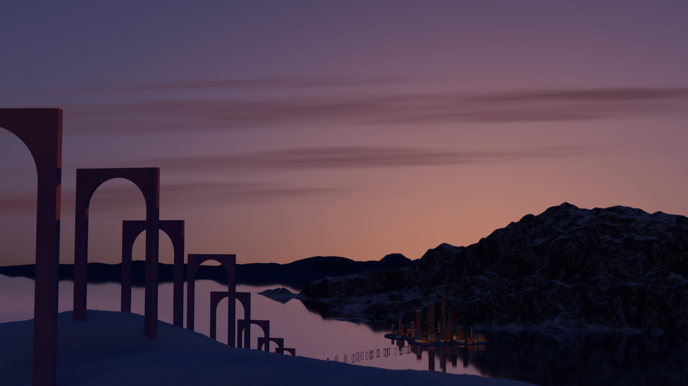

I really love art! I discovered my love of art from a young age and have followed my passion ever since. That's how I came to have a double major in studio art and computer science. This semester I am also taking a senior seminar class in art. The goal is to develop a body of work that is largely self directed. My idea is to create a series of pieces focused around the passage of time. This was inspired by Claude Monet's Haystacks series. And here is an image of one of my pieces that will be part of my series.